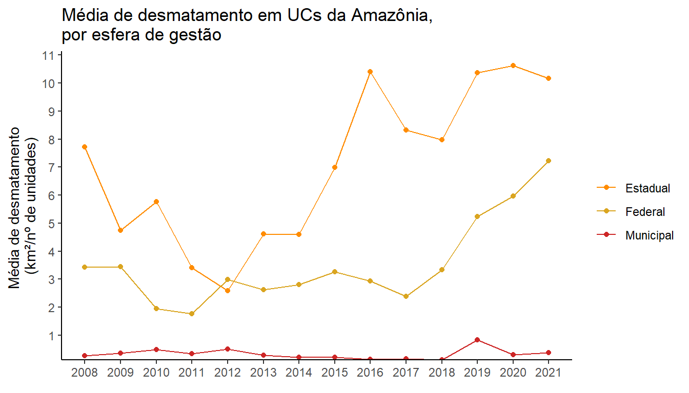
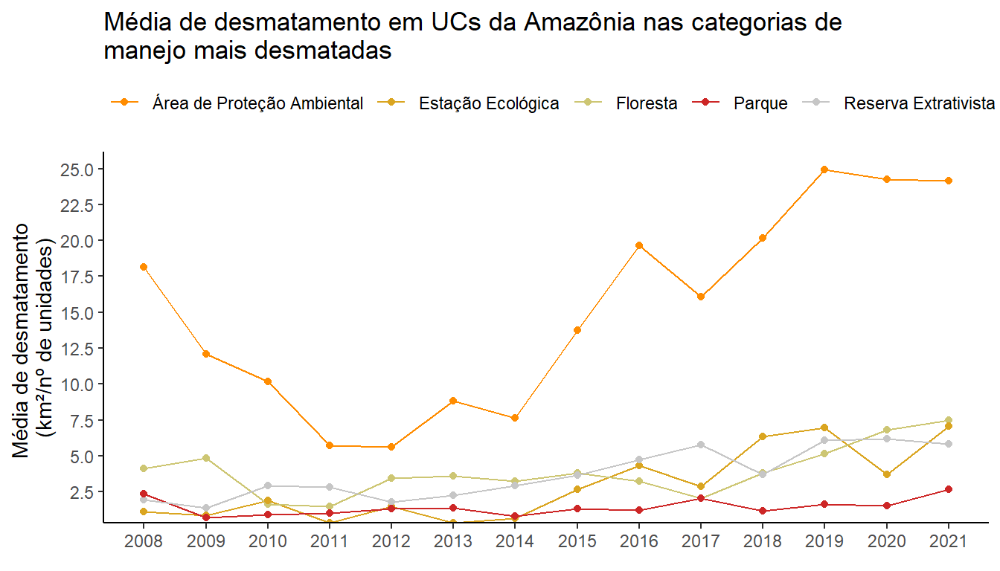
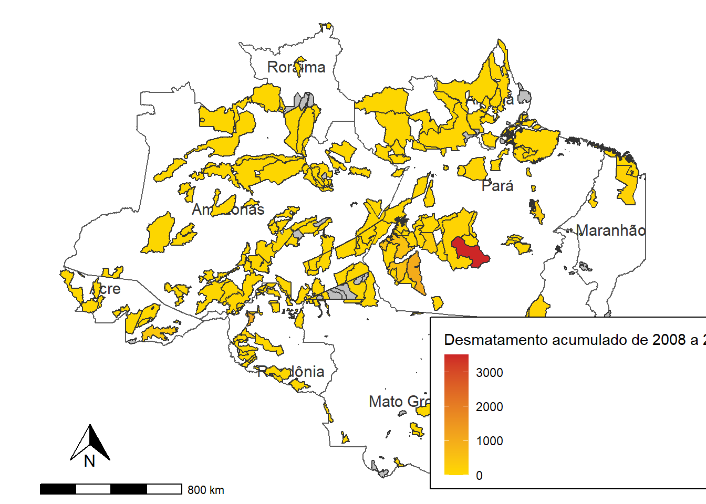

Desmatamento em Unidades de Conservação da Amazônia
A 1ª versão desse relatório foi feita como trabalho final do curso “R para Ciência de Dados 1”, da Curso-R, em outubro de 2021 e está disponível para acesso nesse link. Essa versão consiste no trabalho final do curso “Relatórios Automáticos”, também da Curso-R.
Contexto
As áreas protegidas possuem um papel amplamente reconhecido na conservação da biodiversidade. No bioma amazônico, são encontradas principalmente duas estratégias de proteção: as unidades de conservação e as terras indígenas. As primeiras serão o objeto dessa análise, cujo objetivo é avaliar o comportamento do desmatamento nessas áreas de 2008 a 2021.
Para isso, foram utilizados dados gerados pelo INPE - Instituto Nacional de Pesquisas Espaciais e disponibilizados no portal TerraBrasilis, junto aos dados do Cadastro Nacional de Unidades de Conservação. Para a discussão dos resultados, também foi utilizado como referência o último Relatório Anual de Desmatamento no Brasil, do projeto MapBiomas.
Resultados
Assim como ocorreu para o bioma como um todo, o desmatamento nas unidades de conservação (UCs) aumentou nos últimos anos, como visto na figura abaixo. Em 2021 foi registrado o maior valor dos últimos 13 anos: 1.426,92 km², o que representa um aumento de 20% em relação ao ano anterior, que já havia sido um recorde histórico.

As UCs do estado do Pará apresentaram a maior média de desmatamento nos últimos 4 anos, chegando a 19 km² por unidade de conservação no ano de 2021. O Pará também é campeão em perda de floresta fora de áreas protegidas e o Relatório do MapBiomas aponta que nesse estado o garimpo é um dos principais vetores de ameaça. Outro estado que apresentou um aumento significativo foi o Acre, que triplicou seu desmatamento médio de 2018 para 2019, chegando a mais de 10 km²/unidade em 2020.

As UCs estaduais são, em média, as mais afetadas pelo desmatamento, o que pode ser um reflexo da menor capacidade de proteção e fiscalização dos órgãos estaduais. Porém, enquanto sua média parece se estabilizar, o desmatamento nas unidades federais cresceu vertiginosamente nos últimos anos, um alerta para o aumento da vulnerabilidade dessas áreas.

As UCs da categoria Área de Proteção Ambiental (APA) são as mais desmatadas, em média, ao longo de todo o período de análise. O MapBiomas também aponta um maior desmatamento em unidades de uso sustentável em 2021, porém chama a atenção para o aumento da amaeça sobre as unidades de proteção integral. UCs de uso sustentável são aquelas nas quais é permitido uso indireto de recursos com o objetivo de compatibilizar a conservação da natureza com o desenvolvimento sustentável. As APAs, especificamente, apresentam maior flexibilidade nos usos permitidos, além de geralmente abrangerem espaços territoriais maiores e mais diversos. Essas características tornam sua gestão particularmente desafiadora e pode estar associada à maior dificuldade de proteção. Em relação às demais categorias de uso sustentável, o aumento pode estar associado ao incentivo à invasão de territórios de comunidades tradicionais que permeia o discurso político dos últimos anos, porém uma análise mais profunda seria necessária para enriquecer a discussão.

De forma individualizada, o desmatamento varia muito entre as UCs, com apenas três áreas apresentando um desmatamento acumulado maior do que 1000 km² entre 2008 e 2021:
- Reserva Extrativista Jaci-Paraná, com 1000,29 km²
- Floresta Nacional do Jamanxim, com 1024,61 km²
- Área de Proteção Ambiental Triunfo do Xingu, com 3513,95 km²
O desmatamento nas outras UCs se distribui segundo o mapa abaixo, sendo possível acessar também a tabela de dados para consultar unidades individualmente.

Considerações Finais
Apenas 10% de todo o desmatamento da Amazônia em 2021 ocorreu no interior das unidades de conservação, segundo o Relatório do MapBiomas, o que indica que essas áreas são menos ameaçadas em relação ao bioma como um todo. Contudo, ao desenhar estratégias de conservação voltadas para as UCs, é essencial conhecer o nível de impacto do desmatamento, sobretudo se a área está entre as mais afetadas. Isso permite estabelecer ações prioritárias de monitoramento e proteção, garantindo que o apoio fornecido atenda às necessidades mais urgentes daquela área.
Por outro lado, essa é uma análise para fins didáticos, pois uma avaliação mais assertiva requer o tratamento de dados geoespaciais primários. Aqui foram utilizadas planilhas geradas pelo TerraBrasillis, a plataforma do INPE, em que o cruzamento mais acurados com informações como os limites dos estados ou áreas de sobreposição entre áreas protegidas não é possível. Ainda assim, o panorama é consistente com outras análises de desmatamento o que indica que, para uma visão mais geral, as interpretações podem ser úteis.
Caso deseje mais informações sobre a análise, entre em contato via e-mail: leticia.lopes.dias@alumni.usp.br